Who: Lena Fischer, 38 (born August 1987), a parent. Her child's tutor, Ines Ferreira, runs a self-serve space, "Ferreira Family Practice", and told her: "sign up on Aimtrue and join my space with the code FMXY2345". Lena belongs to cohort C7, the Assessment cohort, on the giver's side ("give one, see results") in docs/member-home-plan.md. Ines's space offers Assessment only (Quest is off there). Lena wants to get into Ines's space and give her child the assessment Ines mentioned.
Outcome: 0/1 journeys passed, 0 skipped, 24 of 35 steps verified. The path into the space works, slowly. Lena signed up from the guest page and waited for the platform's approval (step 10). A day later she signed in, found "Have a code?" on her new home, and asked to join with FMXY2345 (step 16). Ines let her in as a Parent (J11). Nothing told Lena: she found Ferreira Family Practice only by opening the space switcher (step 23). Inside, the home leads with "Start an assessment" (step 24), but the journey broke at step 26. The Student picker opens empty, because no child is linked to Lena in Ines's space. Start stays grey, and no message says why. The only way forward the app shows her, "Add user", lets her fill in her child's whole record, then refuses: "Only an administrator can make this change." (step 34). No assessment started. After a reload (step 35) the home still offers the assessment she cannot start. Steps not verified: step 3 (the code box that is a picture of one) and steps 26-35 (the dead end).
Conversion figures (counted from the entry point, the signed-out guest page; taps include picker choices and checkboxes):
Stretch
Screens
Taps
Typed fields
Waits
Dead ends
Entry to "Waiting for approval" (steps 1-10)
5
12
0
0 loading; then the platform's approval (unannounced)
1 (the example code box)
Return to the request to join, shown as waiting (steps 11-20)
6
7
1 (FMXY2345)
0 loading; then Ines's decision (unannounced)
0
Back after being let in, to the Assessment form inside Ines's space (steps 21-24)
4
3
0
0
0
Entry to the feature's start screen (step 24)
15
22
1
2 waits for a person
1
Trying to start an assessment (steps 25-35)
5
14
2
0
2 (empty student picker; Add user refused)
Whole journey (steps 1-35)
20
36
3
2 waits for a person
3
Every screen answered at once: there was no loading wait anywhere. The cost is elsewhere. Two waits for a person (the platform's approval, then Ines's), and neither is announced when it ends. The code reaches Ines's space only after the first wait and a second sign-in. And at the end the space's one feature cannot be used by the parent it was meant for. For stickiness, Lena leaves with no reason inside the app to come back. Her next step is a text to Ines, outside the app.
The 3 screens Lena would notice most:
Step 10, "Waiting for approval". Lena came with a code from her child's tutor and has had nowhere to type it.
The sheet says "Almost there" over "Waiting for approval". It does not say who approves (Aimtrue? Ines?), how long it takes, or that the code comes later. Its one button writes to a personal Gmail address. A parent sent by a tutor may think she signed up for the wrong thing, a children's game.
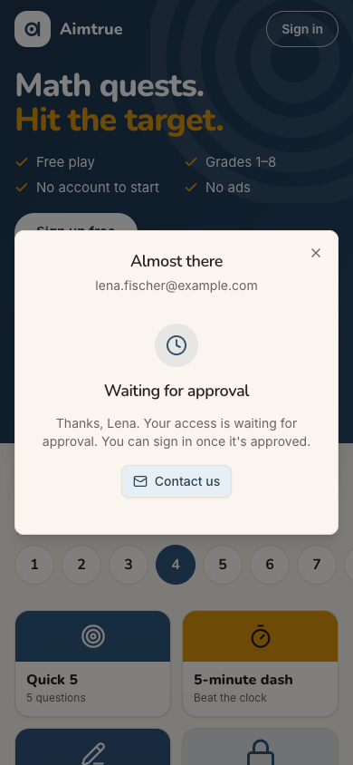
step 10
Step 23, the space switcher. "Ferreira Family Practice · Parent" has quietly appeared above her own space. It
is the only sign that Ines let her in. Lena found it because she went looking in the same menu as the day before. Her home, the band, Next up and the switcher's closed state all looked exactly as before (steps 21-22).
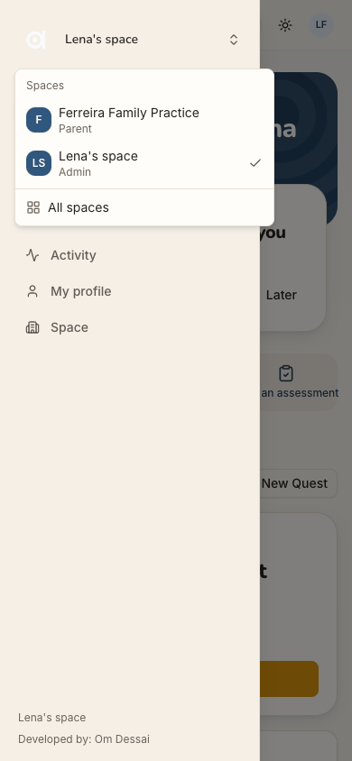
step 23
Step 34, "Only an administrator can make this change." Lena is a parent inside her tutor's space, with
"Start an assessment" as the home's first card. She cannot pick a student, so she adds her child through the "Add user" button the app showed her: parent, name, grade and a consent box. Only then is she told that she was never allowed to. She is not told who the administrator is, or how to ask them.
Let in as a parent with no child, Lena cannot start an assessment, and nothing says why
Issue
Ines let Lena in as a Parent. Her let-in dialog never asked which child is Lena's (J11, finding 4), so no child is linked to Lena in the space. Inside, everything points Lena at Assessment:
The band says "Ready when you are."
Next up says "ASSESSMENTS — Start an assessment. [Open Assessments]", and a quick action repeats it (step 24).
The form sits right below. Open Assessments leads to the same form (step 25).
Tapping "Choose a student" opens a list with no options (step 26). It is placed below the bottom of the phone screen, so nothing visibly happens: no "No students yet", no hint. A level can be chosen (steps 27-28), but Start stays grey, and no message says what is missing. The one route the app then shows her, Add user, is refused (next finding). After a reload (step 35) she is still in the space, and Next up still offers "Start an assessment".
Violation
cuj-contract, step 26 (expected: her child to choose, or a note that the child is not here yet; observed: an empty list, off-screen, and no message). Also steps 28 and 35. task-completion: the journey's end (an assessment started) cannot be reached from Lena's side. success-criteria: after the reload the end state is unchanged and wrong. Nielsen #1 Visibility of system status; Nielsen #9 Help users recognize, diagnose and recover from errors.
Severity
Classify: blocked. Nothing in the app lets Lena start an assessment, and nothing tells her what is
missing or who can fix it. The only way out is outside the app: she texts Ines, and Ines has to work out, unprompted, that she must add Lena's child. C7's giver wants "give one, see results", with Start an assessment in 2 taps or fewer. Here it is impossible, on the home of a space whose only feature is Assessment.
Evidence
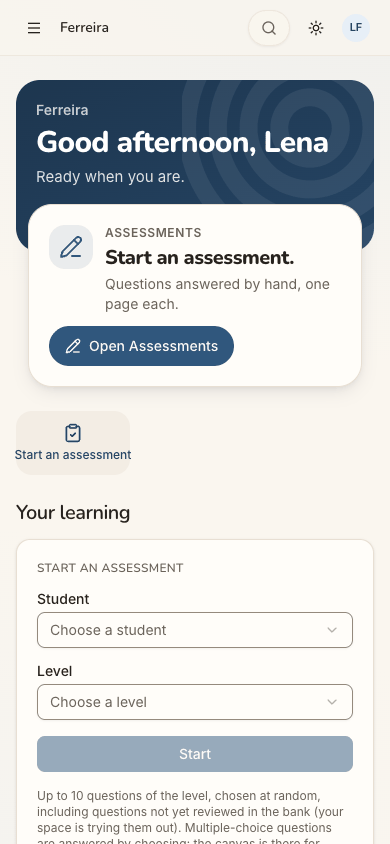
step 24
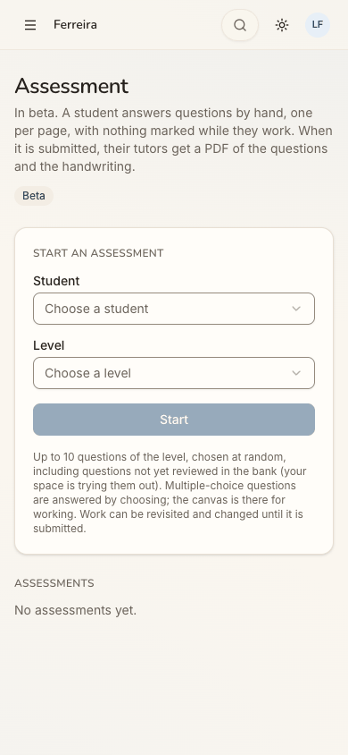
step 26
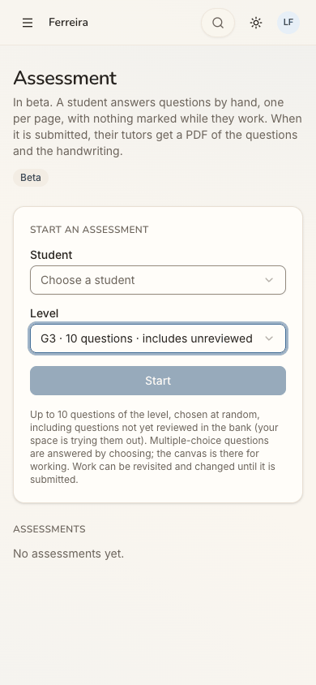
step 28step 35 Repro: in a self-serve space with Assessment on, an admin lets a join request in as Parent without linking a child. As that parent, open the space, tap Open Assessments, then tap "Choose a student". The list opens empty, below the viewport (role=listbox, no options, y = 844 at 390x844). Choose a level: Start stays disabled.
Fix
When the reader has no student they may start an assessment for, replace the form with one card: "To give an
assessment, your child needs to be in Ferreira Family Practice. Ines Ferreira adds children here." Give it a button "Ask Ines to add my child". It could file a request the admin sees in Next up, or copy a ready message (a self-serve space sends no email).
Next up must not offer "Start an assessment" to someone who cannot start one. For a parent with no child, Next up
is "Your child isn't here yet", with the same button.
Show an empty list as a disabled row ("No students yet"), and keep the list on screen.
Say why Start is grey ("Choose a student first").
On the admin's side, the let-in dialog for a Parent should ask "Which child?", with "Add a child" inline (J11
finding 4). Letting parents add their own children here would change a rule (today only admins add people): that is the owner's decision, not part of this fix.
sev3
Being let in is silent: the only sign is a new row in the space switcher
Issue
Asking to join works in two taps once the code box is found (steps 15-16). Its toast, "Asked to join. Its admins will let you in.", does not name the space, and it fades away. The home then looks exactly as before (step 17). The request is visible only on /spaces, under "Requests sent" (step 20), three taps away through menu → switcher → All spaces. Nothing on the home points there.
When Ines lets her in, nothing tells Lena either. She opens a new tab (step 21) and lands in her own space, her last opened. The home, the band, Next up and the closed switcher are all as before. No banner, no Next up item, no count appears (steps 21-22). Only the open switcher shows "Ferreira Family Practice · Parent" (step 23). No email reached her: self-serve spaces send none, and this local stack sends none.
Violation
cuj-contract, step 16 (expected: a confirmation that names Ines's space; observed: "its admins"), step 17 (expected: a waiting state on the home; observed: none) and step 21 (expected: a sign she was let in; observed: none). Nielsen #1 Visibility of system status; Nielsen #6 Recognition rather than recall (she must remember where the request lives).
Severity
Classify: a workaround is needed. Lena must remember, unprompted, to dig through the menu and the
switcher to learn whether Ines has decided. A parent who does not remember the switcher would believe she is still waiting, or that it failed, and stop coming back. For a parent sent by her tutor, this hand-over decides whether she ever reaches the feature. It is not a 4: the switcher does show the space, and opening it works (step 24).
Evidence
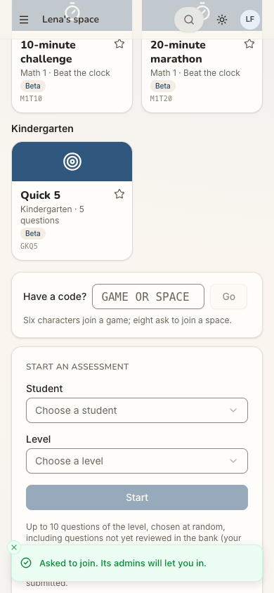
step 16step 17
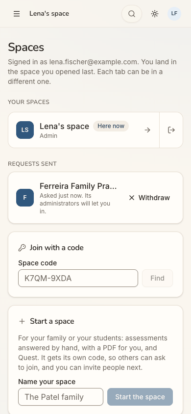
step 20
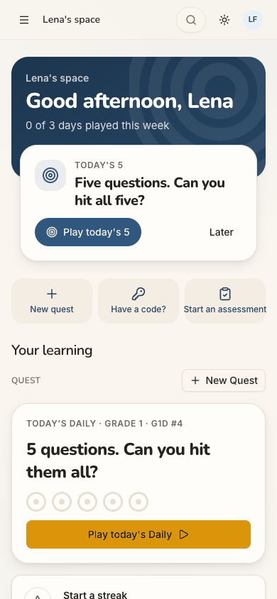
step 21step 23 Repro: as an approved member in a personal space, enter a space code under "Have a code?" and tap Go. Scroll up: the home shows no request. Have the space's admin let you in, then open / in a new tab: the home is unchanged, and the space is listed only in the switcher's menu.
Fix
Name the space in the toast ("Asked to join Ferreira Family Practice. Ines will let you in.").
Keep a waiting card on the home while a request is pending, as an invitation already gets a banner and a count
on the switcher. Make it Next up: "Waiting for Ferreira Family Practice to let you in — asked today", with Withdraw.
When the request is accepted, the next arrival should land in the new space once, with a one-line welcome
("You're in Ferreira Family Practice. Ines Ferreira let you in today."). Until it is opened, show a count on the switcher.
sev3
Add user is offered to a parent and refused only after the whole form
Issue
Looking for her child, Lena opens Users (step 30). It says "Everyone at Ferreira Family Practice" and lists one person, herself (Parent, Active). It does not list Ines, so she cannot see who runs the space. A blue "Add user" button is shown to her. It opens the admin's full dialog (step 31), which offers her the Admin role. The Admin card itself says "Only admins can add people." The Student and Parent cards talk of tutoring and costs, which this space does not have. She ticks Student, picks herself as the parent, types a name and a grade, and ticks the consent box (steps 32-33). Then she taps Add user. The answer is a red toast, "Only an administrator can make this change." (POST /api/users answered 403; step 34). The dialog stays open with her typing in it. The toast does not say who the administrator is, or how to ask them.
Violation
cuj-contract, step 34 (expected: her child added, or told before the form that only Ines can do it; observed: refused after the whole form). Nielsen #5 Error prevention; Nielsen #9 Help users recognize, diagnose and recover from errors; Nielsen #4 Consistency and standards ("Only admins can add people" inside a dialog offered to a non-admin).
Severity
Classify: the end state is wrong and a workaround is needed. The data is safe: the API refuses, as
it should. But the app sends a parent into a dead end it built itself: a full form, a consent statement, then a refusal with no next step. For a newcomer it costs trust ("am I even supposed to be here?"), at the moment she most needs to know whom to ask.
Evidence
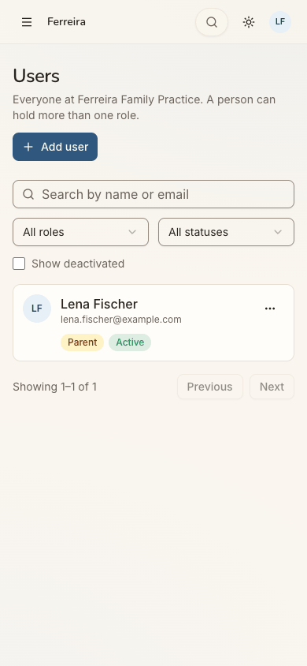
step 30
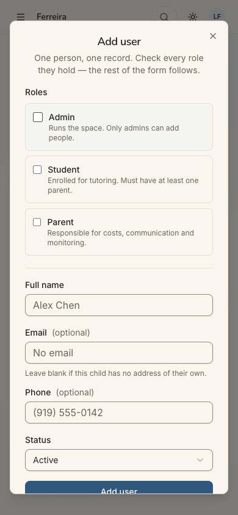
step 31
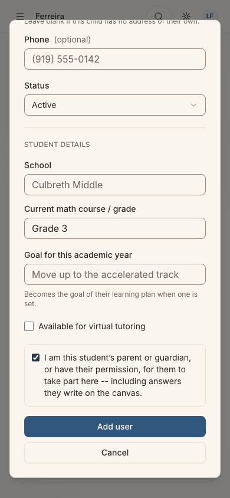
step 33step 34 Repro: as a Parent of a self-serve space (not an admin), open Users and tap Add user. Tick Student, choose yourself as the parent, enter a name, tick the consent box and tap Add user: a toast reads "Only an administrator can make this change." and the browser's network log shows 403 on POST /api/users.
Fix
Render "Add user" (and the dialog's admin-only roles) for the space's admins only.
For anyone else, the Users page should read "Your family at Ferreira Family Practice" and name the admins ("Run
by Ines Ferreira"), with the same "Ask Ines to add my child" action as the sev4 fix.
Wherever a 403 can still reach a form, word the toast so it leads somewhere: "Only Ines Ferreira, the space's
admin, can add people here. Ask her to add your child."
sev3
The approval wait says nothing of who, when, or the code she holds
Issue
After Continue, the sign-up sheet becomes "Almost there", with "Waiting for approval" under it: "Thanks, Lena. Your access is waiting for approval. You can sign in once it's approved." The only button is "Contact us", a mailto to a personal Gmail address (step 10). It does not say who approves: Aimtrue, or Ines, whose code Lena has not been able to enter anywhere. It does not say how long approval takes, or whether she will be told. It does not say that her code will be asked for after approval. The next day the guest page is unchanged (step 11), with no "You're approved". She tries Sign in on a hunch. The same wait is reported in J01 (its sev3); here it also strands the code.
Violation
cuj-contract, step 10 (expected: what happens next, including the code; observed: only that access waits) and step 11 (expected: some sign the account is ready; observed: none). Nielsen #1 Visibility of system status; Nielsen #2 Match between system and the real world (two approvals, platform and space, look like one to her).
Severity
Classify: a workaround is needed. Lena must come back on her own, on no schedule, and guess that
she can now sign in. A parent sent by a tutor reasonably believes the tutor approves her. She may wait for Ines, and Ines may wait for a request that cannot arrive until Lena returns. It is not a 4: signing in later works (step 13).
Evidence
step 10step 11 Repro: under Post-approved sign-up access, sign up from the guest page and answer the age question. Tick the terms and tap Continue: "Waiting for approval" (POST /api/auth/signup answers 403, access pending). After the console approves, open / in a new tab: the guest page is unchanged.
Fix
Give the wait the facts: "Aimtrue checks new accounts by hand, usually within a day. We'll email you when you're
in. Have a code from a tutor or school? You'll enter it right after."
Drop "Almost there" once the state is "waiting".
Point "Contact us" at a product address.
Make the email true on approval, or have the guest page recognise the approved device on the next visit ("Your
account is ready: Sign in").
sev2
The code has no place until after approval, and the example code looks like a field
Issue
Ines's instruction comes with a code, and the guest page (step 1) has nowhere to type it. Its only code is an example, "QF7K2M", in a white, field-like box under "One code, everyone joins" (step 2), with "Create a free family space" below it. Tapping the box does nothing: it is static text (step 3, a dead end). The FAQ has nothing on codes or tutors (step 4). The sign-up sheet and the About-you form do not ask for a code either (steps 5-6). After approval, "Have a code?" is a quick action above the fold on the new home (step 13). That part is good. But it jumps about 1,900 px down, past the Daily and some fifteen tiles, to a small box. Its placeholder is cut off at phone width ("GAME OR SPACE") (step 14). Its hint, "Six characters join a game; eight ask to join a space.", is what told her the 8-character code was right.
Violation
cuj-contract, steps 2-3 (expected: a place for her code; observed: a picture of a code field) and steps 5-6 (expected: the code asked for at sign-up; observed: not mentioned). Nielsen #4 Consistency and standards (an example styled as an input); Nielsen #7 Flexibility and efficiency of use.
Severity
Classify: real friction and one dead end. Lena got there because Ines told her to "sign up" first,
and the home's quick action found the box. But a code holder is the warmest kind of newcomer, and the product makes her carry the code through sign-up, a wait for approval and a second sign-in before it is asked for.
Evidence
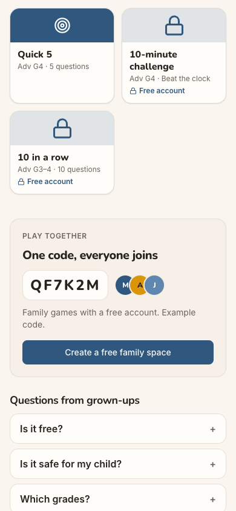
step 2step 3step 14 Repro: signed out at /, scroll to "Play together", tap the code QF7K2M: nothing happens. After signing in, tap the quick action "Have a code?": the page scrolls to a box below every tile.
Fix
Put a real "Have a code from a tutor or school?" field on the guest page, near the top.
Accept a space code there and keep it on the device through sign-up. File the join request as soon as the
account is approved, and say so on the waiting screen ("We'll ask Ferreira Family Practice to let you in").
Style the example code as an illustration (no field border, "for example" inside it).
Open "Have a code?" as a sheet where the button is, instead of scrolling to the bottom of the page.
sev2
She lands in a space of her own she never asked for, as its admin and its learner
Issue
Her first screen after sign-in (step 13) is "Lena's space", a personal space made for her at sign-up. Nothing explains it. She is its Admin (the switcher says so, step 19). Her menu has Users, Activity and Space. The home addresses her as the learner:
"0 of 3 days played this week";
"Your learning", "Start a streak";
a Grade 1 Daily, under a Next up "Today's 5" that offers the same kind of challenge.
For a 38-year-old parent who came to join her tutor's space, it reads as a child's practice page with her name on it, and as a space she did not ask for. While her request waits, the home leads with play, not with the request (step 17).
Violation
cuj-contract, step 13 (expected: a screen about joining Ines's space; observed: her own space, framed as a player's). Nielsen #2 Match between system and the real world; Nielsen #8 Aesthetic and minimalist design (two daily challenges stacked).
Severity
Classify: an observable mismatch and real friction. It does not block: the code box is one tap
away. But it blurs what Lena signed up for, and it makes "which space am I in?" a live question for the rest of the journey. At step 21 she lands back here after being let in.
Evidence
step 13
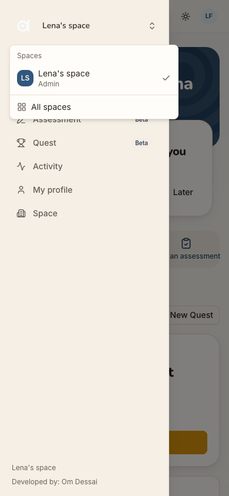
step 19 Repro: as a newly approved adult, sign in from the guest page and look at the first screen and the switcher.
Fix
On first arrival, one line on the band: "This is your own space for practice. Ines's space will appear here once
she lets you in."
While a join request is pending, make it Next up (see the sev3 finding above).
For an adult whose sign-up did not come from guest play, lead with the code box rather than a Grade 1 Daily.
sev2
"Sign in" opens a sheet titled "Sign up free"
Issue
Back a day later, with an account, Lena taps "Sign in" in the header (step 12). The sheet that opens is titled "Sign up free", "Keep your scores, unlock every quest and play with your family.", with one Google button. The words "sign in" appear nowhere. She wonders whether this makes a second account. The same mismatch is reported in J01 and J05.
Violation
cuj-contract, step 12 (expected: a sign-in step; observed: a sign-up sheet). Nielsen #4 Consistency and standards.
Severity
Classify: an observable mismatch at the moment she returns on a hunch. The Google step is the same
either way, so it does not block.
Evidence
step 12 Repro: signed out at /, tap "Sign in" in the header.
Fix
Title the sheet by the button that opened it. From Sign in: "Welcome back. Sign in with the account you used before." Keep "Sign up free" for the hero and the nudges.
sev1
Staff words and cut-off names where a parent reads
Issue
Small wording problems along the way:
Inside the space, the top bar and the band say only "Ferreira" (the short name), not "Ferreira Family Practice",
the name Ines gave her (step 24).
The assessment form sits under "Your learning", though the learning is her child's (step 24).
The form's note says "including questions not yet reviewed in the bank (your space is trying them out)", and
every level reads "· includes unreviewed" (steps 25, 27). That is the space staff's language, and slightly worrying to a parent.
On /spaces the request reads "Ferreira Family Pra…" at phone width. The example space code there is "K7QM-9XDA",
with a dash Ines's code does not have. The page opens with "You land in the space you opened last. Each tab can be in a different one." (step 20).
Violation
cuj-contract, steps 20, 24, 25 and 27 (observable wording mismatches). Nielsen #2 Match between system and the real world.
Severity
Classify: cosmetic. Each one makes Lena pause briefly, and none of them stops her.
Evidence
step 20
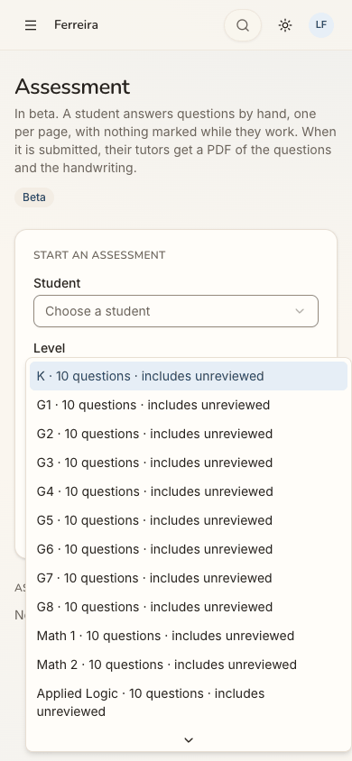
step 27 Repro: as a member of Ferreira Family Practice on a phone, open the home, the Assessment page, the Level picker and /spaces.
Fix
Show the space's full name in the band (the short name can stay in the top bar).
Title a parent's section "Your child's assessments".
Word the beta note for families ("Some questions are new and still being checked").
Let the space name wrap on /spaces, and show example codes in the shape real codes have.
Walkthrough
Step 1 — Open http://localhost:8797/ signed out Expected: a page that shows how to sign up, or where to type a space code. Observed: the guest Play home, "Math quests. Hit the target.", with Sign in, "Sign up free", Today's 5, a grade row and tiles. No code field, and no mention of a tutor's or teacher's space above the fold, on phone or desktop.Step 2 — Scroll down looking for a code box Expected: a "Have a code?" or "Join a space" field. Observed: "PLAY TOGETHER — One code, everyone joins", with the code QF7K2M in a white, field-like box, "Example code." in small grey, and "Create a free family space"; then "Questions from grown-ups" and the footer.Step 3 — Tap the code box QF7K2M to type her own code Expected: a field that takes her code. Observed: nothing. The box is static text and focus stays on the page. Dead end.
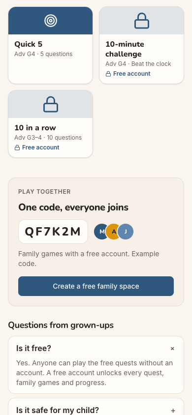
Step 4 — Open the FAQ "Is it free?" Expected: maybe a line on joining a tutor's space. Observed: "Yes. Anyone can play the free quests without an account. A free account unlocks every quest, family games and progress." No FAQ is about codes, tutors or spaces.Step 5 — Tap "Sign up free" Expected: a sign-up form, maybe with a place for her code. Observed: a sheet, "Sign up free — Keep your scores, unlock every quest and play with your family.", with one button, "Continue with Google". No code.Step 6 — Tap "Continue with Google" Expected: Google, then an account form. Observed: at once, "Almost there", with her email, "When were you born?" (Month, Year), "Only whether you are over 18 is kept, never the date.", a terms checkbox and a disabled Continue. Still no code field.
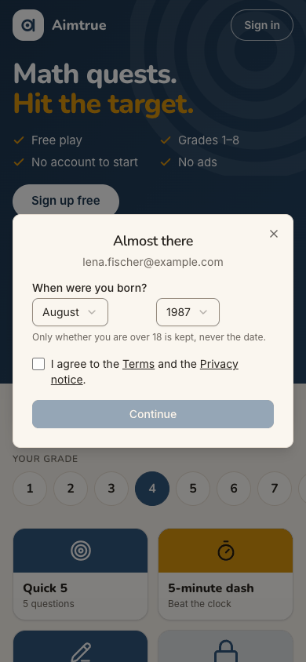
Step 7 — Choose August, then 1987 Expected: two quick pickers. Observed: two custom dropdowns. The year list runs from 2026 down, so 1987 is about 40 rows in. Both set without trouble.
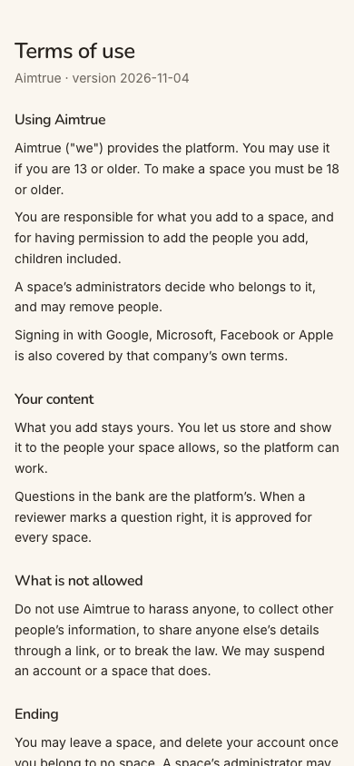
Step 8 — Glance at the Terms Expected: the terms, without losing the form. Observed: /terms opens in a new tab, and the form keeps its state. The terms are short and plain ("A space's administrators decide who belongs to it"). The page has no header or way back. (The new tab was viewed in a separate browser at the same public URL.)
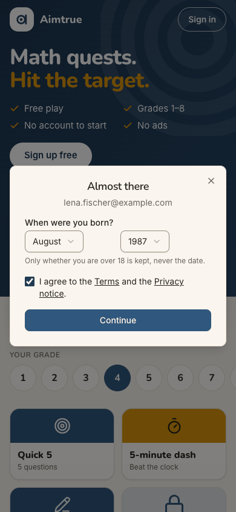
Step 9 — Tick "I agree to the Terms and the Privacy notice." Expected: Continue enabled. Observed: the box ticks and Continue turns blue.Step 10 — Tap "Continue" Expected (Post-approved): "Waiting for approval". Observed: in the same sheet, still titled "Almost there": a clock, "Waiting for approval — Thanks, Lena. Your access is waiting for approval. You can sign in once it's approved." and "Contact us" (a mailto to a personal Gmail address). POST /api/auth/signup answered 403, the designed "pending" answer.Step 11 — A day later, after the platform approved her: open the app in a new tab Expected: some sign that her account is approved. Observed: the very same guest page as step 1. Nothing about her account.Step 12 — Tap "Sign in" Expected: a sign-in sheet. Observed: the sign-up sheet, titled "Sign up free", with one Google button. The words "sign in" appear nowhere.Step 13 — Tap "Continue with Google" Expected: "still waiting", or a screen that asks for her tutor's code. Observed: signed in at once, on the home of "Lena's space", a personal space made for her. "Good afternoon, Lena · 0 of 3 days played this week", Next up "Today's 5", and quick actions "New quest", "Have a code?", "Start an assessment". Then "Your learning" with a Grade 1 Daily, a streak and tiles. On desktop the sidebar has Users, Activity and Space: she is its admin.Step 14 — Tap "Have a code?" Expected: a box for her code. Observed: the page jumps about 1,900 px down, past the tiles, to "Have a code? [GAME OR SPACE] [Go]", with "Six characters join a game; eight ask to join a space." The field has focus, and its placeholder is cut off.
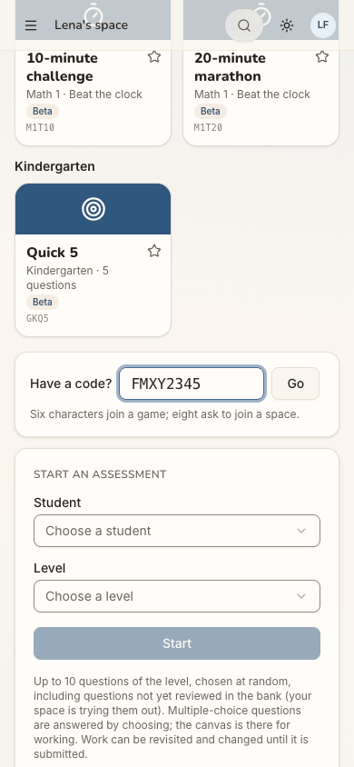
Step 15 — Type FMXY2345 Expected: the code accepted. Observed: it fits (monospace, upper case), and Go becomes active.Step 16 — Tap "Go" Expected: a confirmation that names Ines's space. Observed: at once, a green toast, "Asked to join. Its admins will let you in." The field empties. The page does not change.Step 17 — Scroll back to the top of the home Expected: a "Waiting for Ferreira Family Practice" line. Observed: the home exactly as before. No trace of the request.
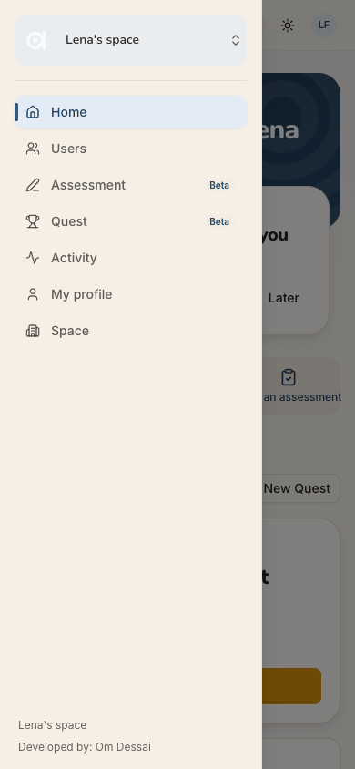
Step 18 — Open the menu to look for Ines's space Expected: Ines's space, perhaps as "requested". Observed: the switcher "Lena's space", then Home, Users, Assessment, Quest, Activity, My profile and Space. No Ferreira.Step 19 — Tap the switcher "Lena's space" Expected: a list of spaces, Ines's pending. Observed: "Spaces: Lena's space · Admin ✓ — All spaces".Step 20 — Tap "All spaces" Expected: her request. Observed: /spaces. "Your spaces: Lena's space · Here now · Admin". "Requests sent: Ferreira Family Pra… — Asked just now. Its administrators will let you in. × Withdraw". Then "Join with a code" (example "K7QM-9XDA") and "Start a space".Step 21 — After Ines let her in: open the app in a new tab Expected: a sign that Ines let her in (a banner, a Next up item), or landing in Ines's space. Observed: still signed in, and on "Lena's space", her last opened. The home is the same as step 13: "0 of 3 days played this week", Next up "Today's 5", the same quick actions. No banner, no item, no count. On desktop, the sidebar switcher reads "Lena's space".Step 22 — Open the menu, where she found her request yesterday Expected: Ines's space, or a dot on the switcher. Observed: the same drawer as step 18. No dot, count or new item.Step 23 — Tap the switcher "Lena's space" Expected: Ines's space, or the request still pending. Observed: "Spaces: F Ferreira Family Practice · Parent", above "LS Lena's space · Admin ✓", and "All spaces".Step 24 — Tap "Ferreira Family Practice · Parent" Expected: a welcome to Ines's space, what it offers, her child. Observed: at once, the space's home. The band says "Ferreira · Good afternoon, Lena · Ready when you are." Next up is "ASSESSMENTS — Start an assessment. Questions answered by hand, one page each. [Open Assessments]", with one quick action, "Start an assessment". Below, "Your learning" has the form (Student, Level, Start greyed) and "No assessments yet.". The desktop sidebar shows Home, Users, Assessment, Activity and My profile: no Quest, which is off in this space. There is no welcome, and no mention of Ines or a child.Step 25 — Tap "Open Assessments" Expected: the start of an assessment, or an explanation. Observed: /assessments. "In beta. A student answers questions by hand, one per page, with nothing marked while they work. When it is submitted, their tutors get a PDF of the questions and the handwriting." Then the same form as on the home.Step 26 — Tap "Choose a student" Expected: her child's name, or a note that her child is not here yet. Observed: the dropdown opens, but its list is empty, and it is placed below the bottom of the screen: nothing visibly happens. There is no message. Dead end.Step 27 — Tap "Choose a level" Expected: a list of levels. Observed: K, G1 … G8, Math 1, Math 2, Applied Logic, Stats & Data Science, Math Modeling. Each one reads "· 10 questions · includes unreviewed".Step 28 — Choose "G3 · 10 questions · includes unreviewed" Expected: Start lights up. Observed: the level is set, and Start stays grey because no student is chosen. No message says why. (She taps "Choose a student" once more: the same empty list.)
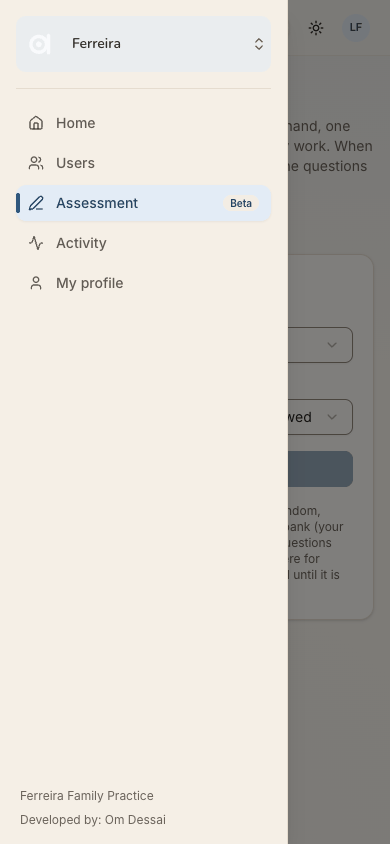
Step 29 — Open the menu to look for her child Expected: "My children" or "Add a child". Observed: the switcher "Ferreira", then Home, Users, Assessment (current), Activity, My profile. No Quest, no My children.Step 30 — Tap "Users" Expected: her family, or the space's people. Observed: "Users — Everyone at Ferreira Family Practice." with a blue "Add user", filters, and one card: "Lena Fischer · Parent · Active". "Showing 1–1 of 1."Step 31 — Tap "Add user" Expected: a way to add her child, or "only Ines can do this". Observed: the full "Add user" dialog. Its roles are Admin ("Runs the space. Only admins can add people."), Student ("Enrolled for tutoring…") and Parent ("Responsible for costs…"), followed by name, email, phone and status.
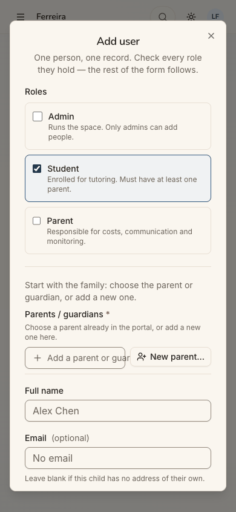
Step 32 — Tick "Student" (her child) Expected: fields for a child. Observed: "Start with the family: choose the parent or guardian, or add a new one." Parents / guardians (required), then the child's details and a consent box: "I am this student's parent or guardian, or have their permission…".Step 33 — Fill in her child: parent, name, grade, consent Expected: a complete form. Observed: the parent picker offers one person, "Lena Fischer". She picks herself, types "Noah Fischer" (an invented child's name; the persona brief names none) and "Grade 3", and ticks the consent box. All accepted.Step 34 — Tap "Add user" to submit Expected: her child added. Observed: a red toast, "Only an administrator can make this change." (POST /api/users answered 403). The dialog stays open with her entries. Dead end.Step 35 — Cancel, back to the space's home, reload Expected: still in Ines's space, with something telling her what to do about her child. Observed: after the reload she is still in "Ferreira". The home is exactly as at step 24, with Next up "Start an assessment" and an empty student picker. The journey ends here, in a dead end.
1 / 35
Appendix
Mode: live, against the audited build (commit 2d6e7d3, sign-in on) at http://localhost:8797, in a headless
Chrome driven one action at a time. Phone width 390x844 throughout; desktop (1280x800) and dark mode at the landing steps 1, 10, 11, 13, 20, 21 and 24.
Frameworks applied:
cuj-contract (each step's expected against observed);
task-completion (the journey's end, an assessment started, was not reached);
success-criteria (the end state checked again after a reload at step 35).
Coverage / not inspected:
The two approvals themselves happened outside Lena's view. The platform admin approved her in the console
(between steps 10 and 11). Ines let her in as a Parent (J11, between steps 20 and 21). Whether any email would be sent was not checked: this local stack sends none, and self-serve spaces send none by design.
Step 8: the Terms open in a new tab, which the driver does not follow. The same public /terms page was viewed in
a separate browser. The Privacy notice was not opened.
Not opened: the FAQ entries "Is it safe for my child?" and "Which grades?"; "Create a free family space"; closing
or reloading the waiting sheet while pending.
Not played: "Play today's 5", the Daily and the tiles (out of scope). The accessibility tree shows the Next up
"Play today's 5" linking to Grade 3 (/quest/daily/NC26.3) while the Daily card says Grade 1. This was not opened, so it is not a finding.
Not tried: Withdraw, Find and Start a space on /spaces; the leave icon; "Later"; "Make this my home"; the
Activity, My profile and Space pages; the account menu; the ⌘K search; a wrong or 6-character code.
Quest: off in Ferreira Family Practice (absent from its menu and home). Lena did not look for it.
After the 403 at step 34, Users was not re-checked to confirm no child was added. The refusal toast and the
403 response were observed.
The iOS app is covered by separate journeys (JxxA).
Access: through the app's real sign-in and sign-up screens; the Google provider step is simulated (a stand-in for
Google's button hands the app a local test token for the persona).
Preconditions made outside the UI: none specific to J07. The run's shared setup applies (README, "The run"):
the platform settings (web sign-in Google only, sign-up open, sign-up access Post-approved, guest play on), and Quest kept off in assess (Ferreira Family Practice). The approvals were made through the console UI (platform admin) and the space's Users page (Ines, J11), not by Lena.